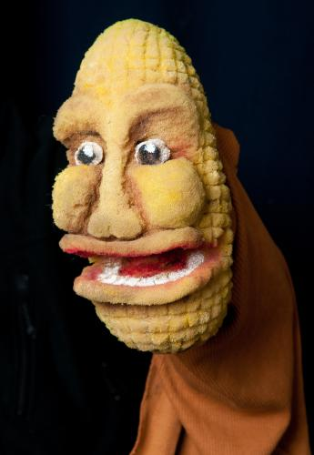
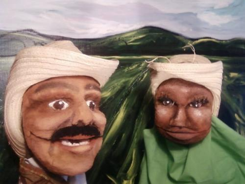

Navigation

User login
Understory Productions
Specializing in stage plays, puppetry, mask theatre and performance art, Understory has presented its work throughout the Americas, from Argentina to Mexico, as well as at regional venues and schools on the East and West Coasts of the USA. Featured works such as Pez/Pescado: An Eat Play, Agua Querida, and The Busted Levee Puppet Show have garnered the acclaim and affection of audiences of all ages.
Field Glossary

English-Spanish Dictionary for Sustainable Agriculture
News and Upcoming Performances
Seven Seven Seven, Featuring 7 Minutes of The Pollen Road
Posted May 9th, 2012 by Reed Ellis AubinYes!Lets Collective presented “7:7:7" on May 13 at Bryant Lake Bowl Theater
Yes!Lets Collective presented a multi-media event to explore how we use sounds, words, and movement to convey
the stories that shape our shared experiences. They asked
unconventional storytellers to tell 7 turning points in 7 minutes from 7
diverse perspectives. The audience took a chance to craft their own story
during this interactive event with puppeteers, visual artists, musicians
and more.
Performances:
THE POLLEN ROAD
Posted January 26th, 2012 by Reed Ellis AubinA plant detoxes and journeys to find roots and a vanishing language, while a farmer loses ground.
WATCH THE NEW VIDEO TRAILER HERE!
A new show by Reed Ellis Aubin, featuring the performance of actor Jillia Pessenda and sound design/music by Judd Rappe.
Produced under the auspices of the PuppetLab program at In the Heart of the Beast Puppet and Mask Theatre. Minneapolis, Minnesota, USA.
SEE WHAT OUR AUDIENCES ARE SAYING
"Understory Theatre produces smart, funny, informative, fast-paced shows that entertain while pushing the audience to engage. Nowhere else has a talking ear of corn given me so much insight!"
- Ken Meter, Director, Crossroads Resource Center
"[Understory's] newly revamped "Not a Kernel To Eat" had me laughing uproariously, at times crying, and ultimately left me with a deeper appreciation and understanding for a serious environmental and social injustice. If you haven't seen the new production, jump at the next chance you get!"
NOT A KERNEL TO EAT
"It was the first puppet show I liked." - Brian Noy, Augsburg College

Not a Kernel to Eat is the story of Paco, a Mexican farmer, as he loves and loses his corn. Through battles with herbicide, water use, and temptations to buy a new HDTV with windfall GMO corn profits, our hero searches for redemption and seeds he can trust.
SELECTED PAST WORKS 2001-2007
Selected Past Works:
Pez/Pescado: An Eat Play Home Planet Theatre, Providence, RI: April 2002.